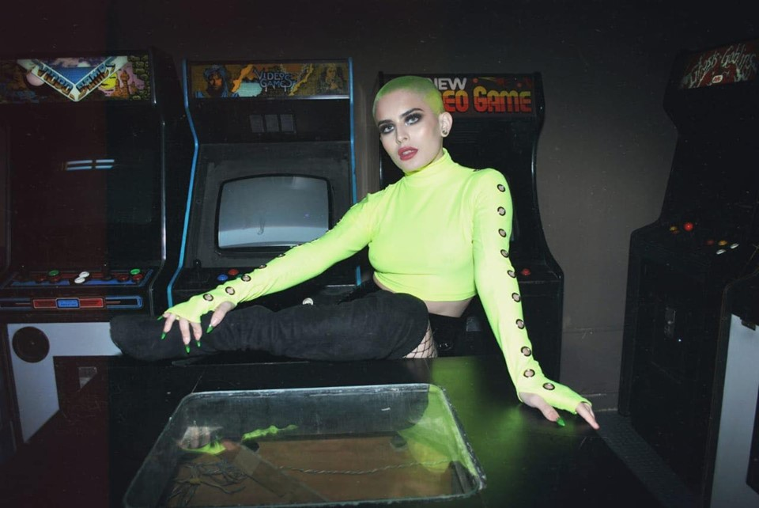
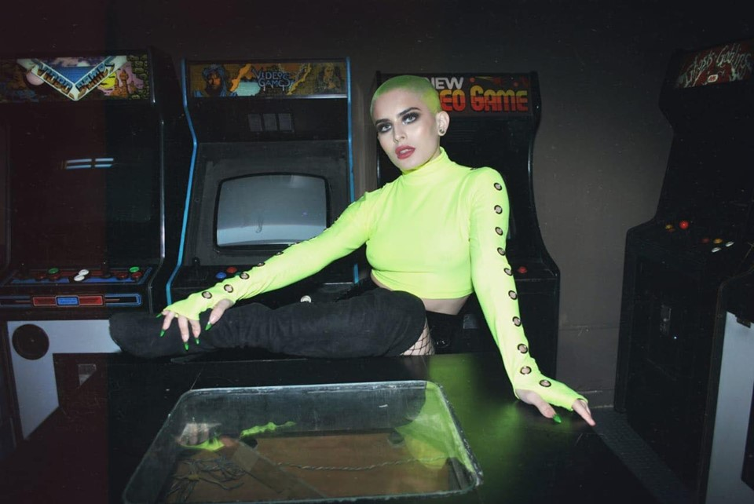

FURIA
Inspired by American football and the concept of 'Symbiosis'. With these in mind, FURIA was born.
What
does it suggest? ‘Life is furiouss, sexual, magic, brutal, it pushes us to our noblest heights and
our
lowest depths. From fury comes creation, inspiration, originality and passion. But also, violence,
pain,
pure destruction without fear of reprisals. FURIA is a brand that creates collections with
dyscruptive
concepts. A synonym for strength and design. FURIA chases us, and the fierce dance to create.
CONTAINER
Inspired by different existing 'containers', materialized in cowhide and cotton wool. The
inspiration behind this particular collection was 'entanglement', not in the literal sense of the
word, but of the deeper meaning behind it.
Entrañamiento means to include, contain or imply, entail, or enter the deepest parts of the soul,
intimately join two or more people. It is also joining, indulging wholeheartedly with someone or
something.
DIMENSION
Inspired by Dionisio Gonzalez’s work, who combines architecture, design, art and structures.He
reinvents situations and suburban landscapes with new digital technologies. Almost all the
architecture on which he worked, was demolished. The concept I used to design was ‘create abstract
morphologies of the Dionisio’s buildings, and design new ones with the help of heat to shape it and
small perforations with laser cutting.
JEWELRY
Inspired by the Rawson neighborhood located in Agronomy, a province of Buenos Aires, Argentina, with
its gray, static and geometric structures and buildings. In its desolate and quiet neighborhood but
in constant movement. What is immobility? Is it static? I descended to physical and moral
immobility, and the brain was brought to me. It is forbidden to learn to work and for the first
time, I feel that every movement tends to immobility.
FANGIO
Inspired by Juan Manuel Fangio, who was an Argentinian speed motorist. The concept behind these
garments was swiftness. ‘I think that living fast is not living, it is surviving. Our culture
instills in us, the fear of wasting time, but the paradox is that acceleration makes us waste life’.
Today everyone suffers from the disease of time, the obsessive belief that time is moving away and
you must pedal faster and faster.
MATRIX
Inspired by The Matrix. I know you’re out there. I can feel you. I know you’re scared. You are
afraid of change. I do not know about the future. I came here to tell you how it’s going to start. I
KNOW YOU'RE OUT THERE. I CAN FEEL YOU. I’m going to hang up this phone and I’m going to show you
what you do not want them to see. I am going to show you a world without rules or control, borders
or limits. A world where anything is possible.
MUSEUM
Inspired by the clothing that was used in the 19th century in Rio de la Plata. They were garments
that sought to fulfill the needs of an everyday life, and several layers was used to protect oneself
from the cold, accoutrements with construction details and accessories in silver, to provide
resistance. The concept of the design is 'The evolution of the production processes, from the
accessory to the garment and the use of garment accessories, that alter the volume, generating new
silhouettes'.


 
